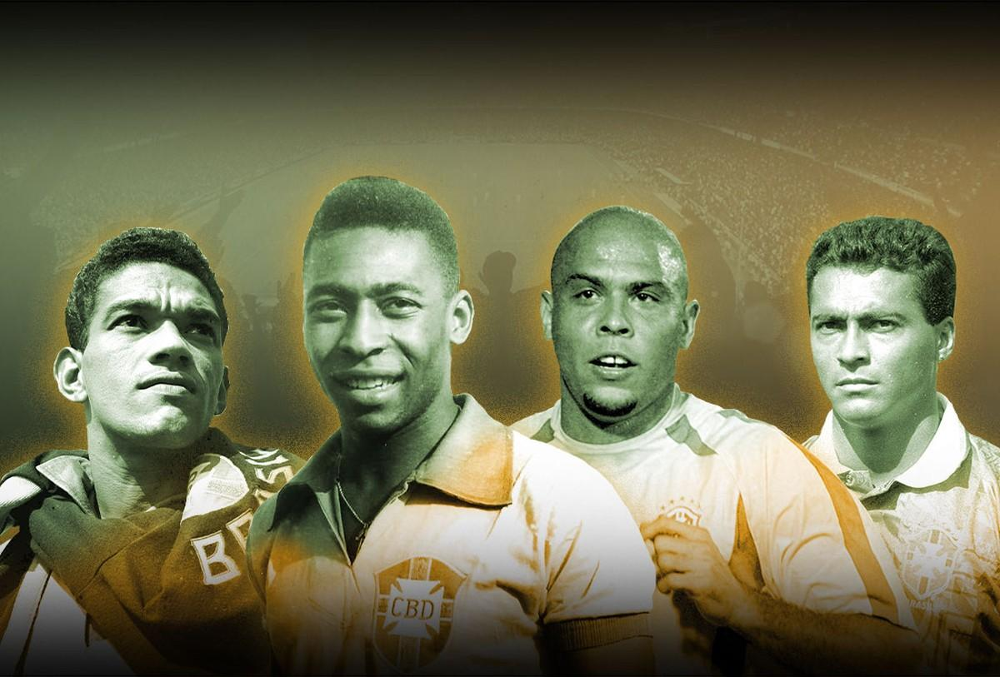
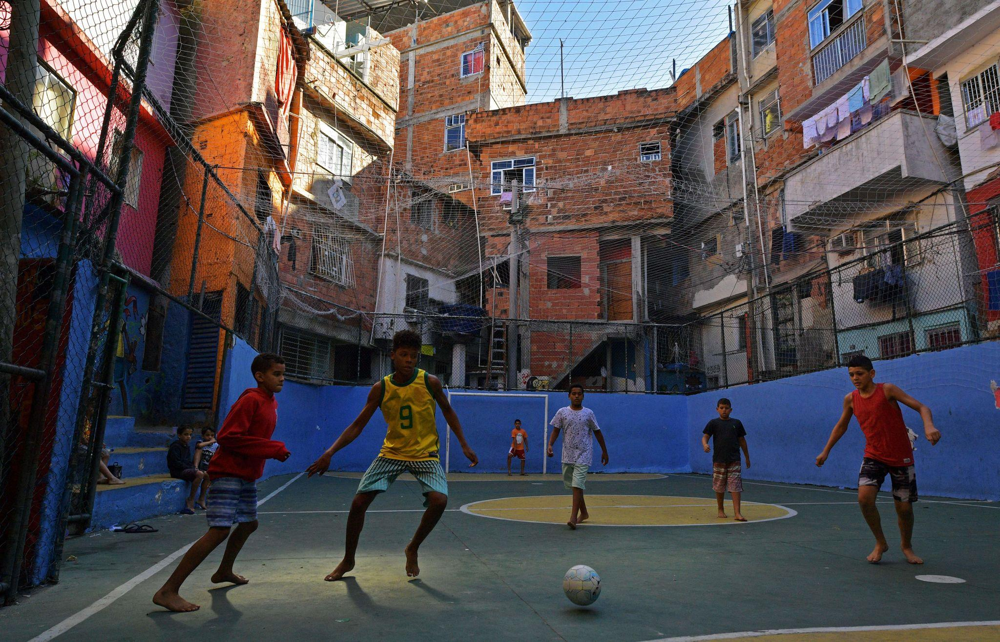

Imersão Cultural & Esportiva
Cada bandeira, uma história. Cada nação, um capítulo na construção do maior espetáculo do planeta.
O Brasil é a seleção mais vitoriosa da história da Copa do Mundo, conhecido mundialmente pelo futebol ofensivo, criativo e por revelar grandes jogadores como Pelé, Ronaldo, Ronaldinho e Neymar. Além do futebol, o país possui uma cultura extremamente diversa, resultado da mistura de influências indígenas, africanas e europeias. O Brasil é famoso pelo Carnaval, pelo samba, pela música popular, pelas praias e pela culinária variada, além da forte paixão nacional pelo esporte.


Os Estados Unidos possuem uma das seleções que mais cresceram na história recente da Copa do Mundo, sendo conhecidos pela evolução do futebol no país e pela forte estrutura esportiva. O país sediou a Copa de 1994 e será um dos anfitriões novamente em 2026. Além do futebol, os Estados Unidos possuem uma cultura extremamente diversa, influenciada por povos do mundo inteiro. O país é famoso por sua música, cinema de Hollywood, tecnologia e esportes como basquete e futebol americano, além de cidades icônicas como Nova York, Los Angeles e Miami.


O Canadá possui uma história recente na Copa do Mundo, participando pela primeira vez em 1986 e retornando em 2022, quando marcou seu primeiro gol na competição. O país será um dos anfitriões da Copa do Mundo de 2026 ao lado dos Estados Unidos e México, recebendo partidas em cidades como Toronto e Vancouver. Além do futebol, o Canadá é conhecido por sua cultura multicultural, influenciada por povos indígenas, franceses e britânicos. O país se destaca por suas paisagens naturais, pelo hóquei no gelo, pela culinária com poutine e maple syrup, além de valorizar diversidade, inclusão e qualidade de vida.


O México é um país de cultura rica e apaixonado por futebol, conhecido por suas tradições, músicas típicas como o mariachi e uma culinária famosa mundialmente, com pratos como tacos e burritos. A cultura mexicana mistura influências indígenas e espanholas, criando festas tradicionais marcantes como o Día de los Muertos. Na Copa do Mundo, a seleção mexicana é uma das mais tradicionais, reconhecida pela força de sua torcida e por participações históricas no torneio.


A Argentina é uma das seleções mais tradicionais da história da Copa do Mundo, conhecida por seu futebol técnico, criativo e por grandes ídolos como Diego Maradona e Lionel Messi. Além do futebol, o país possui uma cultura rica influenciada principalmente pela imigração europeia, especialmente italiana e espanhola. A Argentina é famosa pelo tango, dança tradicional surgida em Buenos Aires, pela culinária com destaque para o asado, empanadas e o mate, além de sua forte tradição em literatura, teatro e música.


A França é uma das seleções mais importantes da história da Copa do Mundo, conhecida por seu futebol técnico, rápido e por revelar grandes jogadores como Zinedine Zidane, Thierry Henry, Kylian Mbappé e Antoine Griezmann. O país conquistou dois títulos mundiais, em 1998 e 2018. Além do futebol, a França possui uma cultura extremamente influente, famosa por sua arte, moda, gastronomia e monumentos históricos como a Torre Eiffel. A culinária francesa, os museus e a forte tradição cultural fazem do país um dos centros culturais mais importantes do mundo.


A Espanha é uma seleção tradicional do futebol mundial, conhecida pelo estilo de jogo baseado em posse de bola e passes rápidos, chamado “tiki-taka”. O país conquistou sua primeira Copa do Mundo em 2010, liderado por jogadores como Andrés Iniesta, Xavi e Iker Casillas. Além do futebol, a Espanha possui uma cultura rica e diversa, marcada pelo flamenco, festas tradicionais como La Tomatina, culinária famosa com paella e tapas, além de grandes artistas como Pablo Picasso e Salvador Dalí.


A Inglaterra é uma das seleções mais tradicionais da história da Copa do Mundo, conhecida por ter criado o futebol moderno e por conquistar o título mundial em 1966, jogando em casa. O país revelou grandes jogadores como Bobby Charlton, David Beckham, Wayne Rooney e Harry Kane. Além do futebol, a Inglaterra possui uma cultura rica e influente, famosa pela música, literatura e arquitetura histórica. O país é conhecido mundialmente por bandas como The Beatles e Queen, além de monumentos como o Big Ben e o Palácio de Buckingham.


A Alemanha é uma das seleções mais importantes da história da Copa do Mundo, conhecida por sua disciplina, organização e grandes conquistas. Além do futebol, o país possui uma cultura rica, marcada por festas tradicionais como a Oktoberfest, pela música clássica de compositores famosos como Beethoven e Bach, além de uma culinária tradicional com salsichas, pretzels e cervejas. A Alemanha também se destaca por seus castelos históricos, arquitetura medieval e grandes contribuições para a filosofia, ciência e educação.


O Uruguai é uma das seleções mais históricas da Copa do Mundo, conhecido por sua tradição, competitividade e pelos títulos conquistados em 1930 e 1950, incluindo o famoso “Maracanazo” contra o Brasil. Além do futebol, o país possui uma cultura rica influenciada principalmente por espanhóis e italianos, com tradições marcadas pelo consumo de mate, pelo tango, candombe e pelo carnaval uruguaio. A gastronomia também é destaque, especialmente o asado, empanadas e o tradicional chivito.


A Itália é uma das seleções mais tradicionais da história da Copa do Mundo, conhecida por sua forte defesa, organização tática e grandes conquistas. Além do futebol, o país possui uma cultura extremamente influente, sendo o berço do Renascimento e de artistas como Leonardo da Vinci e Michelangelo. A Itália também é famosa por sua culinária mundialmente conhecida, com pratos como pizza, massas e lasanha, além de sua música clássica, ópera e cidades históricas como Roma, Veneza e Florença.


Marrocos é uma das seleções mais importantes do futebol africano, conhecida por sua técnica, velocidade e paixão pelo esporte. O país fez história na Copa do Mundo de 2022 ao se tornar a primeira seleção africana a chegar às semifinais do torneio. Além do futebol, Marrocos possui uma cultura rica influenciada por tradições árabes, africanas e europeias. O país é famoso por seus mercados tradicionais, arquitetura islâmica, culinária com pratos como cuscuz e tajine, além de cidades históricas como Marrakech, Casablanca e Fez.


Curaçao é uma das seleções mais recentes da história da Copa do Mundo, conquistando sua primeira classificação para o Mundial de 2026 e se tornando um dos menores países a disputar o torneio. Além do futebol, o país possui uma cultura extremamente diversa, marcada pela mistura de influências africanas, europeias e caribenhas. Curaçao é conhecido pelo idioma Papiamento, pelo carnaval vibrante, pelas músicas tradicionais como Tumba e Tambú, além de sua arquitetura colonial colorida e forte identidade multicultural.


Portugal é uma das seleções mais tradicionais do futebol europeu, conhecida por revelar grandes jogadores como Cristiano Ronaldo, Luís Figo e Eusébio. O país conquistou destaque internacional ao vencer a Eurocopa de 2016 e possui participações marcantes em Copas do Mundo, com campanhas históricas como o terceiro lugar em 1966. Além do futebol, Portugal possui uma cultura rica ligada às grandes navegações, ao fado e à culinária tradicional. O país é famoso por cidades históricas como Lisboa e Porto, além de pratos típicos como bacalhau e os tradicionais pastéis de nata.


O Japão é uma seleção que cresceu muito no cenário da Copa do Mundo, conhecido por sua disciplina, velocidade e organização tática. O país participou de sua primeira Copa em 1998 e desde então se tornou presença frequente no torneio, conquistando vitórias históricas contra seleções tradicionais. Além do futebol, o Japão possui uma cultura rica e milenar, famosa por tradições como os samurais, templos, cerimônia do chá e festivais culturais. O país também é referência mundial em tecnologia, animes, culinária típica como sushi e ramen, além de cidades modernas como Tóquio e Osaka.


Visite
Garanta seu ingresso e visite o maior museu da Copa do Mundo
Comprar Ingresso
.png)
.png)
.png)